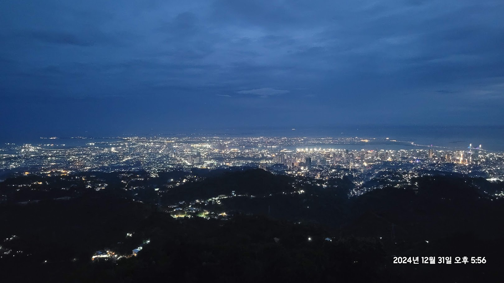

🍜 리장의 먹거리
납서족 전통 국수, 얼쓰
쌀로 만든 면에 고소한 육수를 부어내는 윈난식 국수로, 아침 식사로 인기가 많습니다.
야크 고기 요리
고산지대 특성상 야크 고기를 활용한 구이·전골이 발달했습니다. 담백하면서 진한 풍미가 특징입니다.
카드에 마우스를 올리면 이미지가 확대됩니다.



쌀로 만든 면에 고소한 육수를 부어내는 윈난식 국수로, 아침 식사로 인기가 많습니다.
고산지대 특성상 야크 고기를 활용한 구이·전골이 발달했습니다. 담백하면서 진한 풍미가 특징입니다.
| 위치 | 중국 윈난성 리장시 |
|---|---|
| 추천 시기 | 4~6월, 9~10월 |
| 대표 명소 | 호도협, 옥룡설산, 리장 고성 |